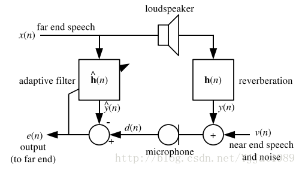

本文将对Speex相关的概念进行介绍
[TOC]
Speex编解码器是一款开源且免费的语音编解码器，遵循BSD协议，为分封网络（packet network）和网络电话（VoIP）而设计，支持文件的压缩
为网络电话而不是移动电话而设计，意味着Speex对数据丢失具有鲁棒性，但是对数据包损坏不鲁棒，在VoIP中的数据包要么完整到达，要么不能到达
Speex选用CELP（码激励线性预测编码）编码技术，在高比特率和低比特率都稳定可靠，复杂性适度并且占用内存较少
相关概念
采样率
采样率是每秒钟采集到的信号样本数，单位是Hertz（Hz），Speex为三种不同的采样率而设计：8kHz（窄带），16kHz（宽带）和32kHz（超宽带）
比特率
在对语音信号编码时，比特率定义为单位时间内的比特数，单位是比特每秒（bps）或通常的千比特每秒（kbps）
注意千比特每秒（kbps）和千字节每秒（kBps）的区别。
质量（可变）
Speex是有损的编解码器，意味着压缩率以输入语音信号的保真度为代价，质量越高，压缩后的比特率越大，音质也越好
Speex可以控制质量和比特率之间的折中，大多数时间由一个范围在0到10之间的质量参数控制
在不变比特率（CBR）中，质量参数是一个整数； 在可变比特率（VBR）中，质量参数是一个浮点数。
复杂度（可变）
Speex允许编码器拥有可变的复杂度，通过一个范围在1到10之间的整数控制搜索的执行来实现，复杂度越高，压缩率越高，CPU使用率越高，音质越好，类似于gzip和bzip2压缩工具的-1到-9选项
正常使用情况下，复杂度为1的噪声等级比复杂度为10的噪声等级高1到2个dB，但复杂度为10的CPU要求比复杂度为1的高5倍。
实际应用中，最好的折中是复杂度2到4，但在编码非语音声音如DTMF声调时更高的复杂度经常被用到
可变比特率（VBR）
可变比特率（VBR）允许编解码器自适应的根据待编码音频的“难度”动态地改变比特率，如元音和高能瞬态变化的声音需要高比特率以获得好的质量； 但是摩擦音（如s，f）用低比特率就能充分编码
- 优点：VBR在相同的质量下能获得更低的比特率，或在不变比特率下获得更好的质量
- 缺点：在指定质量情况下，无法保证最终的平均比特率；在一些如网络电话（VoIP）这样的实时应用中，依赖于最大比特率，这在通信信道中必须足够低。
平均比特率（ABR）
平均比特率解决了VBR中的一个问题，它动态地调整VBR质量以获得指定的比特率，因为质量和比特率是实时调整的，ABR的全局质量比正好达到目标平均比特率的VBR编码质量稍微差些。
声音活动检测（VAD）
VAD检测待编码的音频是语音还是无声/背景噪声，VBR编码中默认激活
Speex检测出非语言段并仅使用足够复现背景噪声的比特率进行编码，这叫“柔化噪音生成”（CNG）。
断续传输（DTX）
断续传输是VAD/VBR的附加操作，当背景噪声平稳时会完全停止传输
知觉增强
知觉增强是解码器的一部分，当被启用时，能减少编解码过程中产生的噪声或失真的知觉
在大多数情况下，知觉增强会带来声音客观上的偏离（如仅考虑SNR），但最后仍听起来更好（主管增强）
等待时间和算法延时
每一个语音编解码器在传输中都会引入延时，对于Speex，延时等于帧长加上处理每一帧需要前几帧的数量
在窄带操作中延时为30ms，在宽带操作中延时为34ms，这不包括编解码帧时的CPU时间
相关组件
编解码器
Speex编解码器有以下特性
- 免费软件/开源，免专利费和版税
- 利用嵌入比特流集成了窄带和宽带
- 大范围可用比特率（从2.15kbps到44kbps）
- 动态比特率转换（AMR）和可变比特率操作（VBR）
- 声音活动检测（VAD，与VBR集成）和断续传输（DTX）
- 可变复杂度
- 嵌入宽带结构（可伸缩采样率）
- 32kHz超宽带采样率
- 强度立体声编码选项
- 定点实现
预处理器
预处理器在对音频编码前对音频进行预处理，有三个主要功能
- 噪声抑制
先降噪再进行编解码是有好处的，因为Speex编解码器通常会对噪声输入同样进行编解码，这将会扩大噪声，而降噪能大大减少这一影响 - 自动增益控制（AGC）
自动增益控制（AGC）是为了处理录音音量在不同设置里有很大差别这一问题，AGC将会调整信号音量到参考音量大小 - 声音活动检测（VAD）
预处理器提供的声音活动检测（VAD）比编解码器中直接提供的VAD更先进
自适应抖动缓冲器
当通过UDP（User Datagram Protocal，用户数据报协议）或RTP（Real Time Protocal，实时传输协议）传输声音（或其他任何内容）时，数据包可能丢失，不同延时到达，甚至乱序，抖动缓冲器的作用是对数据包进行重排序并保存在足够长的buffer（但有一定限度）里，然后将数据包发送去解码
声学回声消除器
在任何免提式通信系统中（下图），远端的语音在本地扬声器播放时，经过在房间里传播后又会被麦克风录音，如果将麦克风录音直接又发送到远端，则远端的用户将会听到他自己的回声

声学回声消除器就是为了在将录音发送到远端前消除声学回声，提高了远端接收的语音质量
重采样器
重采样指转换音频的采样率，在任意采样率间进行转换（采样率必须是有理数），能控制质量和复杂度的折中，可用于能混合不同采样率流，支持声卡不支持的采样率，能转码等
Reference
About me

- GitHub：AnSwErYWJ
- Blog：http://www.answerywj.com
- Email：yuanweijie1993@gmail.com
- Weibo：@AnSwEr不是答案
- CSDN：AnSwEr不是答案的专栏
 This work is licensed under a Creative Commons Attribution-ShareAlike 4.0 International License.
This work is licensed under a Creative Commons Attribution-ShareAlike 4.0 International License.
本作品采用知识共享署名-相同方式共享 4.0 国际许可协议进行许可。